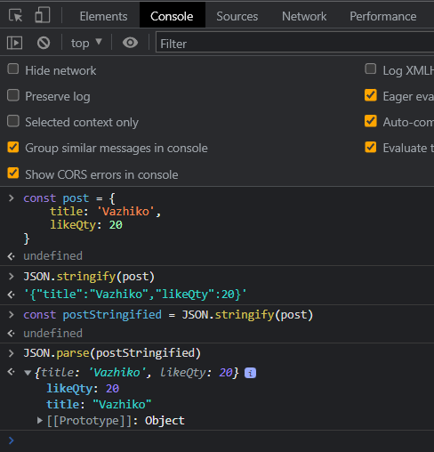

ALL JS
Most important in Js - expression - function - Objects In js ALMOST everything is object Object In JavaScript, an object is an unordered collection of key-value pairs. Order is not important Each key-value pair is called a property. example: const obj = { visible: true, colorDepth: 28, title: "Test Image", orientation: { angle: 0, type: "landscape" } } -Array is an Object. -Function is an Object. -Strings and numbers have behavior like object -console.log() -console.dir() all properties of object. -console.table() all properties of object in table - console - object, - log - method or function - () - call of (function) method log - console.log('Vazha') - expression, result of this expression is string 'Vazha'.
Expressions
All expressions always return value. - "Vazha" or 'Vazha' string (typeof(expression)) // Vazha string - 28 number . type of this expression is number // 28 number - 5 + 2 expression of number 5, operator "+" and number 2. // 7 number Result of this expression will be number 7. - с = 10 assignment expression - "hello " + "my friend" // hello my friend string - a <= b || c !== d // true or false - myFunction(c, d) // result of function
expression with side properties: - k = 5 // variable k has been assigned the value 5 - b++ // operator '++' increase value of variable b on 1 // b = b + 1 - function(c, d) take arguments as parameters c, d and then return something
Variables
Variables give ability of repeating access to values - Name of variables: - PascalCase for class and type - DB_PASSWORD value of variable is known before running app and will not changed - camelCase all other case. Variables should be understandable for all. variable declaration: var old shit, can buble up let we will change the value of this variable, we can only declarate with out assigning from ECMAScript 6 const value of this variable will not changed, we must declarete and assign value for this variable from ECMAScript 6 let a declaration of variable a; const c = 10 declaration of variable c and assign to it value 10 a = true assign to variable a value true --------------------------------------------------------------------------------------------------- console.log(a); // ReferenceError: a is not defined let a console.log(a); // undefined let b b = true console.log(b); // true
Type of variables
Type of variables determined by value of it property. const a = 10; // type of a is number or variable a is number const b = 'abc' // variable b is string
Types in JS
Primitives:
string
number
bigint
boolean
undefined
symbol
null
reference (cсылочный) ONLY 1
Use reference type we can changed object from different variables
 Object :
-Array,
-Function,
-Object
Object :
-Array,
-Function,
-Object
Object
const objectA = { a: 28, b: false } objectA.c = 'ckocolate' const copyOfA = objectA console.log(copyOfA); // {a: 28, b: false, c: 'ckocolate'} // they are REFERENCE
Object
const myCity = { city: 'Kyiv', popular: true, country: 'Ukraine' } // city is key(property), 'Kyiv" is value of property(key) //getting values of properties(key) console.log(myCity.city) // 'Kyiv' // dot notation(dots after words) console.log(myCity.popular) // true // dot notation(dots after words) // changing values myCity.city = 'Lviv' console.log(myCity) // {city: 'Lviv', popular: true, country: 'Ukraine'} // adding new properties(key) and values for them myCity.haveMetro = false console.log(myCity) // {city: 'Lviv', popular: true, country: 'Ukraine', haveMetro: false} // deleting properties(key) delete myCity.country console.log(myCity) // {city: 'Lviv', popular: true, haveMetro: false}
// Access to value with [] const myCity = { city: 'Kyiv' } myCity['popular'] = true console.log(myCity) // {city: 'Kyiv', popular: true} // Like this also adding.In general we use [''] syntax when we want give value of special property(key) amd save it in variable. const countryFullName = 'country' // variable countryFullName assign string 'country' myCity[countryFullName] = 'Ukraine' // obj myCity with key countryFullName assigned value 'Ukraine' console.log(myCity); // {city: 'Kyiv', popular: true, country: 'Ukraine'}
const myCity = { city: 'Kyiv', info: { location: 'good', population: 5000 }, popular: true, } // info is nested (вложенный) objec. info is nested value of object - myCity // nesting can be multi-level console.log(myCity.info.population) // 5000 delete myCity.info['population'] // deleting nested value with square brackets console.log(myCity);
// Using variables as value for object's property const name = 'Vazha' const postQty = 28 const userProfile = { name: name, //second name is value of const nam e = 'Vazha' postQty: postQty, //second postQty is value of const postQty magicPower: true } // same but more short // shorthand property const userProfile2 = { name, // property and variable must have same name "name" postQty, // // property and variable must have same name "postQty" magicPower: true }
GLOBAL OBJECTS
window, global, // window in webbrausers , global in node.js globalThis for all
Method
Method is property of object.This property has value function. Methods as functions can be called with () const myCity = { city: 'Kyiv', cityGreeting: function () { // cityGreeting is method with value anonymous function console.log('Greetings!!'); } } myCity.cityGreeting() // 'Greetings!!' // shorthand property const myCity2 = { city: 'Kyiv', cityGreeting() { // cityGreeting is method with value anonymous function // body of function console.log('Greetings to 2!!'); } } myCity2.cityGreeting() // 'Greetings to 2!!' //call of method cityGreeting
JSON
JSON - javascript object notation JSON is format for changing infromation between computers. { "name": "All-js", //key name is string "lockfileVersion": 2, "requires": true, "packages": {} } we can use JSON.parse() for json object to convert them into js object when we recieve from back end or api we can use JSON.stringify() to convert something from js into json 
Mutation in JS
// copy of primitives are coping by values const a = 10 let b = a b = 28 console.log(a); // 10 console.log(b); // 28 // copy of objects are coping of reference, thats why we will mutate the object const person = { name: 'Olga', age: 40 } console.log(person); // {name: 'Olga', age: 40} person.age = 27 person.isAdult = true console.log(person); // {name: 'Olga', age: 27, isAdult: true} console.log(person.isAdult); // true //Mutation via copies // copy by reference const person2 = person // variable person and person 2 have reference to one same object person2.age = 100 person2.isAdult = false console.log(person); // {name: 'Olga', age: 100, isAdult: false}
How avoid mutation during making copy of objects
// How avoid mutation: // 1) create new copy with "Object.assign({}, person)" but only if you dont have nested objects inside. // cause you still have resposibility mutate them in main object const person = { name: 'Olga', age: 27 } const person2 = Object.assign({}, person) // method assign of class and type Object, // {} new empty object person is base for new obj person2.age = 200 console.log(person.age); // 27 console.log(person2.age); // 200 // 2) copy with spread operator // also have problem with nested objects cause the same reason as in first state const person3 = { ...person }; person3.age = 3 console.log(person3.age); console.log(person3); console.log(person); // 3) copy with JSON methods.Full independent copy const person4 = JSON.parse(JSON.stringify(person)) // object person convert into string after this it parse(convert into object) // double convertation console.log(person4);
Function
The function is a block of code that can be executed multiple times. // let a = 5 // let b = 4 // let c; // c = a + b // console.log(c); // 9 // a = 15 // b = 14 // c = a + b // console.log(c); // 29 // we can optimisate this code let a = 5; let b = 9; function sum(a, b) { // a and b are parameters of function sum const c = a + b console.log(c); } sum(a, b) // 14 // a and b are arguments during call of function a = 2; b = 3; sum(a, b) // 5 // a and b are arguments during call of function
Function can be "A function can be: -named -anonymous -assigned to a variable -used as an argument when calling another function (callback) -a value of a property (method) of an object. Function is object.And as all objects function has also properties. function myFunction(a, b) { // myFunction is name of function, a and b are parameters, {body of function} let c // parameters of function have behavior as variables a = a + 1 // and inside function's body we can make with them some operations c = a + b return c } console.dir(myFunction); // whe can check which properties have function // If function dont have instruction for returning it will return undefined console.log(myFunction(2, 4)); // 7 const result = myFunction(2, 4) console.log(result); // 7
Passing(передача) values by reference
const personVazhiko = { name: 'Vazha', age: 28 } function increasePersonAge(person) { // this function will recieve some obj as argument person.age += 1 // will change its property age return person // after operation to avoid underfind we are returning obj } increasePersonAge(personVazhiko) // personVazhiko and person from function are referenced //to one object.So function will mutate obj personVazhiko // copy of obj have not created thats why this function will mutate obj console.log(personVazhiko.age) // 29 //It is not recomended to change object inside of function //Beter is using copy of objects const personOlga = { name: 'Olga', age: 27 } function notMutateIncreasePersonAge(person) { const newPerson = { ...person } // by spread copiing the obj newPerson.age += 1 // in copy we change its value return newPerson // we are returning copy with changed property } const updatedPerson = notMutateIncreasePersonAge(personOlga) // in variable updated person //we assign result of calling of function notMutateIncreasePersonAge //as result we recieve copy of obj with changed value // of property console.log(personOlga.age); // 27 with out mutation (obj personOlga have not changed) console.log(updatedPerson.age); // 28 updated person it is new obj
CALLBACK FUNCTION
function someFunction() { // Some operations } function fnWithCallBack(callbackFn) { // function fnWithCallBack received // as argument antother function // in body of this funtion, another function // will called callbackFn() } fnWithCallBack(someFunction)
function printMyName() { console.log('Vazha'); } setTimeout(printMyName, 1000) // 'Vazha' // printMyName is callback in function setTimeOut// // setTimeout is special function in JS for window.Like timeout. // first argument is calback function, second arg is //quantity of delay of miliseconds
RULES FOR WORKING WITH FUNCTIONS
1) We are giving name to functions basing on what operations they do.The same for variable. 2) One function make one operation (single purpose function) For example if you need sum something and after add some string to this value, it will be more readable if it will be 2 functions 3) It is not recomended to change variables inside the body of function So better create copy of something and work with it
SCOPE (Область видимости)
Scope is a mechanism that determines the availability of variables in your code. (Область видимости определяет границы действия переменной) Variables: -global (window, console) -local inside csope let a; // global variable declarated let b; // global variable declarated function myFn() { //start of local scope let b; // local variable b that is independed(another) from global variable b a = false; // global varibale a assigned by value false b = 28; //local variable b assigned by value 28 because variable b is declarated // when a = false; console.log(b); // 28 // inside scope we are consoling local variable and it's value = 28 } // end of local scope myFn() // call of function myFn() console.log(a); // false console.log(b); // undefined ------------------------------------------------------------------------------------------------------ const a = 5; function myFn() { function innerFn() { console.log(a); // 5 we will see after we call functions } innerFn() } myFn() // if we call innerFn() in global scope we will see error 'innerFn is not defined'
Types of Scope: -global - fuction scope -block :for, if else
RULES FOR WORKING WITH VARIABLES
1) All variables should be declarate before using them; 2) Try always use const if it is possible 3) Don't change variable from global scope, inside of functions,
'USE STRICT'
Forbids using undeclared variables. 'use strict' must be first in global scope or in function scope
OPERATORS
Operators are special internal functions and they return value as a result. Operators: -Mathematical operators: Addition + Subtraction - Multiplication * Division / Remainder of a division % - Comparsion operators: strict equality === strict inequality !== less than or equal <= greater than or equal >= - Logic operators: NOT ! AND && OR || - Assignment operator = -Text operators: typeof // type of something instanceof // to check belonging to class new delete
let a, b // operator dot is giving ability to declarete 2 or more variables a = 10 b = a let c = a + b console.log(c); // 20
a = 10 // a and 10 are operands, = is operator
Unary operators are operators which have one operand(argument) :
a++ // operator which increase value of operand on 1 +a // operator for converting string into number delete obj.a // delete operand obj.a typeof a // operator to get information about type of this operand(a) new Obj() // operator which will create obj with class and type
Binary operators are operators which have two operand(argument) :
a = 5 a + b a += 5 // operator of increasing value //so we increase value on 5 and assign to variable a a === b a && b
infix notation - operator between operands: a = b prefix notation - operator before operand: ++a, typeof a postfix notation - operator after operand : a++
LOGIC OPERATORS
! // NOT // unary operator and it always return boolean value true or false && // AND // return value of one from operators || // OR return value of one from operatorsFALSE VALUES
Boolean(value) => false:
false // false nothing to add ))
0 // after convertating into bolean value (call fn Boolen()) it will be false
'' // after convertating into bolean value (call fn Boolen()) it will be false
undefined // after convertating into bolean value (call fn Boolen()) it will be false
null // after convertating into bolean value (call fn Boolen()) it will be false


! NOT
!10 //false !0 //true !'' //true !'Vazaha' //false !undefined //true double !! not // to get if arg has false value and convert value into boolean value const obj = {} !!obj //true !!undefined //false
OPERATORS && AND || ARE SHORT CIRCUIT OPERATORS ОПЕРАТОРЫ КОРОТКОГО ЗАМЫКАНИЯ
Operator &&
expression1 && expression2 // each operand is expresssion and returns value // If expression 1 is falsy: // 1) expression 2 will be ignored // 2) return result of expression 1 as reult of expression1 && expression2 // If expression 2 is false while expression 1 is true: // 1) return result of expression 2 as reult of expression1 && expression2 // if expression 1 and expression 2 true than return last one so expression 2
Operator ||
expression1 || expression2 // each operand is expresssion and returns value // If expression1 is true: // 1) expression2 will be ignored // 2) return result of expression1 && has priority upon || so a && b || c && d same like (a && b) || (c && d)Operator ...
Can be spread or restconst button = { width: 200, text: 'Good' } const greenButton = { ...button, color: 'green' } // console.dir(greenButton) // color: "green" // order inside of objject has no difference // text: "Good" // width: 200 // [[Prototype]]: Object //--------------------------------------------------------------------------------------------------- const button1 = { width: 200, text: 'Good', color: 'Brown' } const greenButton1 = { ...button1, color: 'green' } // console.dir(greenButton1) // // color: "green" // order inside of objject has BIG diference during usage of operator '...' // like this case I have overwritten value of key color, cause destructurisation of object button1 // is situated before new object's key color with value 'green' // text: "Good" // width: 200 // [[Prototype]]: Object //--------------------------------------------------------------------------------------------------- const button2 = { width: 200, text: 'Good', color: 'Brown' } const greenButton2 = { color: 'green', ...button2 } console.dir(greenButton2) // // color: "brown" // order inside of objject has BIG diference during usage of operator '...' // like this case I have not overwritten value of key color, cause destructurisation of object button1 // is situated after new object's key color with value 'green' // text: "Good" // width: 200 // [[Prototype]]: Object
// Connecting objects with "spread operator" ...
const buttonInfo = { text: 'Interest text' } const buttonStyle = { width: 130, height: 40, color: 'orange' } const allButtonInfo = { ...buttonInfo, ...buttonStyle } console.log(allButtonInfo); //{text: 'Interest text', width: 130, height: 40, color: 'orange'} // If objects which have same key(property), they will be overwritten by the value of the object at the end.
String concatenation
Operator + for concatenation
const banner = "Hello " + "World" console.log(banner); // Hello World string // backspace after hello can be replaced before world// const hello = "Hello" const vazha = "Vazha" const greeting = hello + " " + vazha console.log(greeting); // Hello Vazha
Template string literal(Шаблонные строки)
const myName = "Vazha" const myCity = "Kyiv" console.log(`My name is ${myName}. I live in ${myCity}.`) // very comfortable to use, inside of variables can be everything.//
Functional expression (Функциональные выражения)
Difference between function and functional expression is absence name inside functional expression
So functional expression is always anonymous.
// Declarated function
// Declarated function
function myFunction(a, b) {
let c
a = a + 28
c = a + b
return c
}
// Functional expression
const functionExpression = function(a, b) { // no identefier after word function so it is anonymous// only able inside variable
let c
a = a + 28
c = a + b
return c
}
console.log(functionExpression(-2, 4)); // 30
//Now fuction expression can be called by name of variable 'const functionExpression'

Function expression inside calling of another function(callback)
setTimeout(function () { console.log('Hello'); }, 1000) //function expression console.log('Hello') will called after 1 second // in this case better use functional expression cause we dont need name of this function or we willnot reuse it separately
Arrow function
//Arrow function is function expression and it also has not name. //Arrow function dont need word fuction only need "=>" that is why they are "arrow" const arrowFn = (a, b) => { let c; a = a + 28 c = a - b return c } // console.log(arrowFn(2, 30)) // 0 //--------------------------------------------------------------------------------------------------- //Arrow function with out parameters let c = 2; console.log(`Variable "c" before arrowFnWithOutParams = ${c}`); // variable c before arrowFnWithOutParams = 2 const arrowFnWithOutParams = () => { c = c + 10 return c } arrowFnWithOutParams() console.log(`Variable "c" after arrowFnWithOutParams = ${c}`); // variable c after arrowFnWithOutParams = 12
Main reason why better use function expression is in variable, that assign with word 'const', so you will not have opportunity to change it, it will give error
Arrow Fn as callback
setTimeout(() => { console.log(`This is arrow function's body`); }, 2500) // String `This is arrow function's body` will shown in console after 2500ms //(2500 is delay in 2nd argument of function setTimeout)
Rules: How make arrow function syntax shorter and more compact
1) If arrow function have only one parameter, than you dont need using round brackets(круглые скобки) with them const arrowFn = a => { console.log(`This is body of function expression with one parameter a`); a = a + 2 return a } // But still I must use instruction return, in other case function will return undefined 2) If arrow function's body made from one expression (MOST POPULAR) I can write this function with out curly braces(фигурных скобок) const arrowFn = ((a, b) => a + b) // In this case after "=>" i dont need to write curly braces(фигурные скобки), // cause a + b is only one expression and here is also inserted automaticly return // IN ENGLISH CORRECTLY TO SAY THAT IT IS "implicit return"(Неявный возврат).
Default function parameters
function multByFactor(value, multipliyer = 1) { // 2nd parameter multipliyer = 1 by default return value * multipliyer } console.log(multByFactor(5, 5)); // 25 // we have overwritten value of multipliyer = (5), that by default = 1 //But when we call function with default parameter and we have not sent the argument to it's paramter, //this parameter will take value from default value console.log(multByFactor(5)); // 5 // we havenot overwritten value of multipliyer,cause we have not given argument to parameter, //As by default parameter multipliyer = 1.It automatically takes this value as argument // so for this funtion same result will give console.log(multByFactor(5, 1)); // 5 // =============================================================================================== // variant with anonymous function expression const multByFactor1 = function (value, multipliyer = 1) { return value * multipliyer } console.log(multByFactor1(5, 5)); // 25 console.log(multByFactor1(5)); // 5 // =============================================================================================== // variant with arrow function (expression) !MOST POPULAR! const multByFactor2 = (value, multipliyer = 1) => value * multipliyer console.log(multByFactor2(5, 5)); // 25 console.log(multByFactor2(5)); // 5 //========================================================================================================= const newPost = (post, addedAt = Date()) => ({ //function expression assign by variable newPost //take 1st parametr post which will be object // addedAt will be always default value as result of global function Date() // Date() will put there full date in string format whhich will show // exact date when function Date() has been called //'Mon Feb 27 2023 14:55:14 GMT+0200 (Восточная Европа, стандартное время)' //so we will need put in function expression newPost only one argument object //To receive copy of puted object inside of function newPost //newPost was made arrow function and it uses "implicit return"(Неявный возврат) ...post, // and spread operator with first parametr to make copy from it (copy of object) addedAt, // and put new key "addedAt" with default value = // exact date when function Date() has been called in string format // cause our addedAt second parametr have the same name as our new object }) //so this function take object make from it copy and add one more key addedAt with string of date of calling newPost() const firstPost = { id: 25, author: "I" } console.log(newPost(firstPost))//{id: 25, author: 'I', addedAt: 'Mon Feb 27 2023 15:21:20 GMT+0200 (Восточная Европа, стандартное время)'} const result = newPost(firstPost) console.log(result)// {id: 25, author: 'I', addedAt: 'Mon Feb 27 2023 15:22:35 GMT+0200 (Восточная Европа, стандартное время)'} //Time shows online(alwasy change acc to when function date called inside function expression newPost) // Date() not static value //--------------------------------------------------------------------------------------------------------- //Variant with Explicit return (ЯВНЫЙ ВОЗВРАТ)// //instruction return written inside of arrow function' body const newPost1 = (post, addedAt = Date()) => { const newPost = { ...post, addedAt } return newPost } const result1 = newPost1(firstPost) console.log(result1);// { id: 25, author: 'I', addedAt: 'Mon Feb 27 2023 15:43:16 GMT+0200 (Восточная Европа, стандартное время)' }